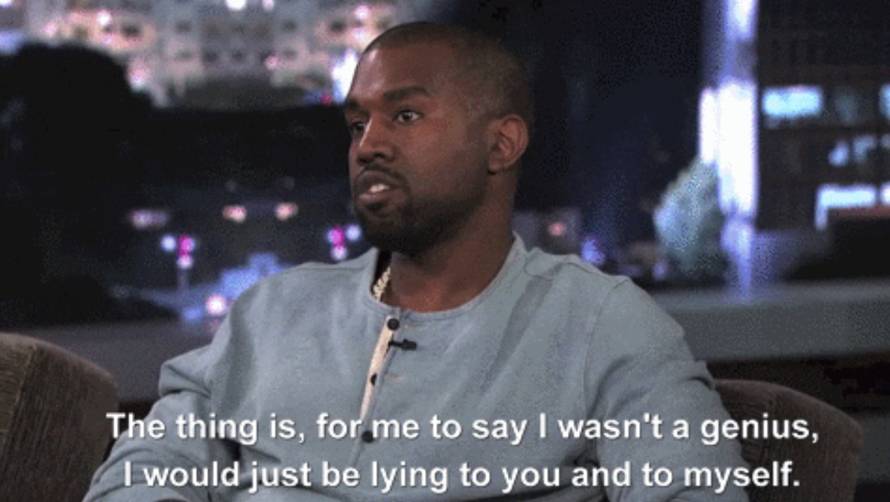
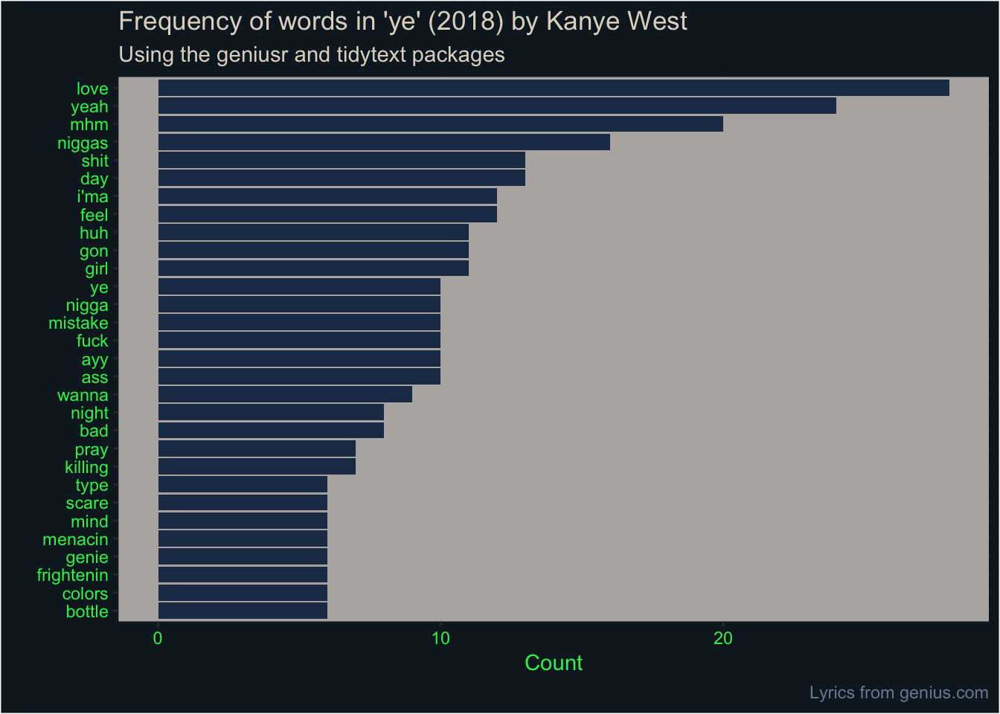
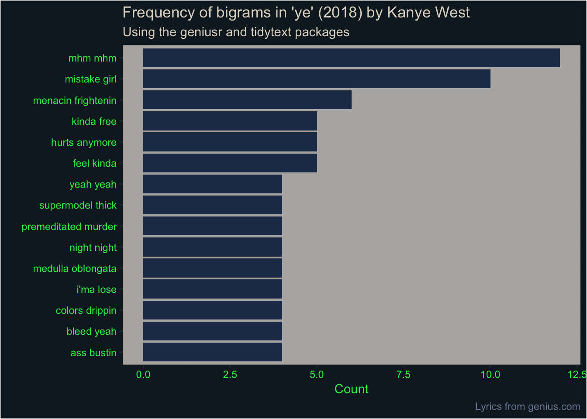

library(dplyr)
library(geniusr)
search_artist("kanye west") %>% knitr::kable()
tl;dr
You can use {geniusr} to get artist and song data from the Genius API and {tidytext} to wrangle the text.
Genius?
Kanye West released his latest album—ye—last week1 after a(nother) pretty turbulent and controversial period of his life2. So what’s been on his mind?
I think the real question is why don’t we scrape Yeezus’s lyrics from the web and analyse them using R? Obviously.
Genius
Genius is a website where you can upload and comment on song lyrics. It’s like Pop Up Video for young people.
You can access the lyrics data via Genius’s API3. Luckily, the R package {geniusr} was developed by Ewen Henderson for exactly this purpose.4
Access the API
You need to register with Genius so you can get tokens for accessing their API. To do this:
- Create a new Genius API client.
- Click ‘generate access token’ under ‘client access token’ to generate an access token.
- After
install.packages("geniusr"),library(geniusr)you’ll be prompted to enter the access token when you try to use a {geniusr} function
I stored the token in my .Renviron file. This is a file for store variables that R will look for and load automatically on startup. Edit the file on your system by running usethis::edit_r_environ() and adding the line GENIUS_API_TOKEN=X, replacing X with your token.
If you don’t store your token this way then you’ll be prompted for a new token every time you start a new R session, which could get quite tedious. It also means you don’t have to store it in plain sight
Use {geniusr}
Find Kanye
First we need to find the artist ID for Kanye. We can use search_artist() to look for him.
| artist_id | artist_name | artist_url |
|---|---|---|
| 72 | Kanye West | https://genius.com/artists/Kanye-west |
| 652275 | JAY-Z & Kanye West | https://genius.com/artists/Jay-z-and-kanye-west |
Kanye’s ID on Genius is 72 as a solo artist. We can save this value as the object kanye_id and use it to get metadata about him. This includes the web address for his artist page on Genius, a link to the image of him used on the site and the number of people ‘following’ his lyrics page.
kanye_id <- 72
artist_meta <-get_artist_meta(artist_id = kanye_id)
glimpse(artist_meta)Observations: 1
Variables: 5
$ artist_id <int> 72
$ artist_name <chr> "Kanye West"
$ artist_url <chr> "https://genius.com/artists/Kanye-west"
$ artist_image_url <chr> "https://images.genius.com/92fee84306e9a1ec88...
$ followers_count <int> 8754Get songs
Now we can use Kanye’s artist ID to obtain all his songs on Genius.
kanye_songs <- get_artist_songs(artist_id = kanye_id)
kanye_songs %>%
sample_n(5) %>%
select(song_name) %>%
knitr::kable()| song_name |
|---|
| Can’t Tell Me Nothing (Official Remix) (Ft. Jeezy) |
| Last Call |
| Oh Oh |
| See You In My Nightmares (Live From VH1 Storytellers) |
| Paranoid (Ft. Mr. Hudson) |
We can also access a greater list of data for each song, including the album name and release date. We can use the map_df function from the {purrr} package to look for the meta data for each song in turn.
library(purrr)
songs_meta <- map_df(kanye_songs$song_id, get_song_meta)
sample_n(songs_meta, 10) %>%
select(song_name, album_name) %>%
knitr::kable()| song_name | album_name |
|---|---|
| Never See Me Again | NA |
| Olskoolicegre | I’m Good |
| Just Soprano Freestyle | NA |
| BET Cypher 2010 (Kanye West, Big Sean, Pusha T, & Common) (Ft. Big Sean, Common, CyHi The Prynce & Pusha-T) | NA |
Looking at the album names, it seems we’ve got songs from 37 albums at least plus a bunch that are unknown or unclassified.
unique(songs_meta$album_name)[1] NA
[2] "Def Poetry Jam"
[3] "Kanye West's Visionary Streams of Consciousness"
[4] "Zane Lowe BBC Radio Interviews (Kanye West)"
[5] "The Life of Pablo"
[6] "808s & Heartbreak"
[7] "Late Registration"
[8] "The College Dropout"
[9] "Freshmen Adjustment"
[10] "World Record Holders"
[11] "ye"
[12] "My Beautiful Dark Twisted Fantasy"
[13] "VH1 Storytellers"
[14] "Get Well Soon..."
[15] "Freshmen Adjustment Vol. 2"
[16] "The Cons, Volume 5: Refuse to Die"
[17] "Graduation"
[18] "Can't Tell Me Nothing"
[19] "Kon the Louis Vuitton Don"
[20] "Yeezus"
[21] "I'm Good"
[22] "Graduation \"Bonus Tracks, Remixes, Unreleased\" EP"
[23] "Turbo Grafx 16*"
[24] "G.O.O.D. Fridays"
[25] "Kanye West Presents Good Music Cruel Summer"
[26] "Kanye's Poop-di-Scoopty 2018"
[27] "King"
[28] "Freshmen Adjustment Vol. 3"
[29] "2016 G.O.O.D. Fridays"
[30] "Welcome to Kanye's Soul Mix Show"
[31] "Late Orchestration"
[32] "College Dropout: Video Anthology"
[33] "The Lost Tapes"
[34] "NBA 2K13 Soundtrack"
[35] "Rapper's Delight"
[36] "Boys Don't Cry (Magazine)"
[37] "The Man With the Iron Fists (Original Motion Picture Soundtrack)"
[38] "Coach Carter (Music from the Motion Picture)"So you can see ye is definitely in the list of albums and we can filter our data frame so we just get the seven tracks from that particular album. Maybe we’ll explore the other lyrics more deeply another day.
ye <- songs_meta %>% filter(album_name == "ye")
select(ye, song_name)# A tibble: 7 x 1
song_name
<chr>
1 All Mine
2 Ghost Town
3 I Thought About Killing You
4 No Mistakes
5 Violent Crimes
6 Wouldn't Leave
7 YikesWe can fetch the lyrics from Genius for each song now that we have their details. We can do this using map_df() again to apply the scrape_lyrics_url() function to each row of our dataframe, where each row represents a single song.
ye_lyrics <- map_df(
ye$song_lyrics_url,
scrape_lyrics_url
)
ye_lyrics <- ye_lyrics %>%
group_by(song_name) %>%
mutate(line_number = row_number()) %>%
ungroup() %>%
left_join(ye, by = "song_name")
ye_lyrics %>%
sample_n(10) %>%
select(line, song_name) %>%
knitr::kable()| line | song_name |
|---|---|
| It’s a different type of rules that we obey | I Thought About Killing You |
| This not what we had in mind | Ghost Town |
| We could wait longer than this | Wouldn’t Leave |
| Not havin’ ménages, I’m just bein’ silly | Violent Crimes |
| Shit could get menacin’, frightenin’, find help | Yikes |
| Thank you for all of the glory, you will be remembered, aw | Violent Crimes |
| Sometimes I take all the shine | Ghost Town |
| Baby, don’t you bet it all | Ghost Town |
| Premeditated murder | I Thought About Killing You |
| But that’s not the case here | I Thought About Killing You |
Break the lyrics down
Words
Extract
Now we’ve got the lines separated, we can bring in the {tidytext} package from Julia Silge and David Robinson to break the lines into ‘tokens’ for further text analysis. Tokens are individual units of text prepared for analysis. In our case, we’re looking at individual words, or ‘unigrams’.
We should probabaly remove stop words. These are words don’t really have much meaning in this context because of their ubiquity, like ‘if’, ‘and’ and ‘but’. We can get rid of these by anti-joining a pre-prepared list of such words.
library(tidytext)
ye_words <- ye_lyrics %>%
unnest_tokens(word, line) %>% # separate out tokens
anti_join(tidytext::stop_words) # remove 'if', 'and', etc
ye_words %>%
sample_n(5) %>%
select(word, song_name) %>%
knitr::kable()| word | song_name |
|---|---|
| yesterday | Violent Crimes |
| drop | I Thought About Killing You |
| huh | Yikes |
| publicly | Wouldn’t Leave |
| drama’ll | Ghost Town |
Note that this isn’t completely successful. Kanye also uses colloquialisms and words like ‘ima’; a contraction of two stop words that isn’t represented in our stop-word dictionary.
Count words
Now we’ve tokenised the lyrics to removed stopwords, let’s also show this as a plot. For simplicity, we’ll show only the words that appeared more than five times.
I’ve sampled even colours from the album cover of ye, stored as hexadecimal values in a named vector. We can select from these to decorate our plot, because why not. The album cover is a Wyoming mountainscape, taken on Kanye’s own iPhone shortly before he held a listening party for the new album. Scrawled in green lettering over the image is the phrase ‘I hate being Bi-Polar it’s awesome’.
{kind=link}
ye_cols <- c(
mountain_blue = "#233956",
grass_blue = "#0e1e27",
cloud_blue1 = "#7a8aa2",
cloud_white = "#dfd7c9",
cloud_grey = "#b5b2b0",
cloud_blue2 = "#9da3ae",
text_green = "#31ef56"
)Okay, on with the plot.
library(ggplot2)
ye_words %>%
count(word, sort = TRUE) %>% # tally words
filter(n > 5) %>% # more than 5 occurrences
mutate(word = reorder(word, n)) %>% # order by count
ggplot(aes(word, n)) +
geom_col(fill = ye_cols["mountain_blue"]) +
labs(
title = "Frequency of words in 'ye' (2018) by Kanye West",
subtitle = "Using the geniusr and tidytext packages",
x = "", y = "Count",
caption = "Lyrics from genius.com"
) +
coord_flip() +
theme( # apply ye theming
plot.title = element_text(colour = ye_cols["cloud_white"]),
plot.subtitle = element_text(colour = ye_cols["cloud_white"]),
plot.caption = element_text(colour = ye_cols["cloud_blue1"]),
axis.title = element_text(colour = ye_cols["text_green"]),
axis.text = element_text(colour = ye_cols["text_green"]),
plot.background = element_rect(fill = ye_cols["grass_blue"]),
panel.background = element_rect(fill = ye_cols["cloud_grey"]),
panel.grid = element_line(ye_cols["cloud_grey"])
)
Bigrams
Extract
Tokenising by individual words is fine, but we aren’t restricted to unigrams. We can also tokenise by bigrams, which are pairs of adjacent words. For example, ‘damn croissant’ is a bigram in the sentence ‘hurry up with my damn croissaint’.
ye_bigrams <- ye_lyrics %>%
unnest_tokens(
bigram,
line,
token = "ngrams",
n = 2
)Removing stopwords is tricker than for tokenising by word. We should tokenise by bigram first, then separate the words and match them to our stopword list.
library(tidyr)
ye_bigrams_separated <- ye_bigrams %>%
separate(bigram, c("word1", "word2"), sep = " ")Then we can filter to remove the stopwords.
ye_bigrams_filtered <- ye_bigrams_separated %>%
dplyr::filter(
!word1 %in% stop_words$word,
!word2 %in% stop_words$word
) %>%
mutate(bigram = paste(word1, word2))The results look a bit like this:
ye_bigrams_filtered %>%
sample_n(5) %>%
select(bigram, song_name) %>%
knitr::kable()| bigram | song_name |
|---|---|
| bleed yeah | Ghost Town |
| fallin dreamin | Violent Crimes |
| premeditated murder | I Thought About Killing You |
| gonna leave | All Mine |
| ayy i’ma | All Mine |
Count bigrams
So let’s plot the most frequent bigram occurrences, like we did for the single words
ye_bigrams_filtered %>%
count(bigram, sort = TRUE) %>%
filter(n > 3) %>%
mutate(bigram = reorder(bigram, n)) %>%
ggplot(aes(bigram, n)) +
geom_col(fill = ye_cols["mountain_blue"]) +
labs(
title = "Frequency of bigrams in 'ye' (2018) by Kanye West",
subtitle = "Using the geniusr and tidytext packages",
x = "", y = "Count",
caption = "Lyrics from genius.com"
) +
coord_flip() +
theme(
plot.title = element_text(colour = ye_cols["cloud_white"]),
plot.subtitle = element_text(colour = ye_cols["cloud_white"]),
plot.caption = element_text(colour = ye_cols["cloud_blue1"]),
axis.title = element_text(colour = ye_cols["text_green"]),
axis.text = element_text(colour = ye_cols["text_green"]),
plot.background = element_rect(fill = ye_cols["grass_blue"]),
panel.background = element_rect(fill = ye_cols["cloud_grey"]),
panel.grid = element_line(ye_cols["cloud_grey"])
)
What did we learn?
It’s difficult to get a deep insight from looking at individual words from a 24-minute, seven-song album. You might argue that looking for deep insight from Kanye West’s lyrics is a fool’s errand anyway.
Despite this, ‘love’ and ‘feel’ were in the top 10, which might indicate Kanye expressing his feelings. ‘Bad’, ‘mistake’ and ‘pray’ were also repeated a bunch of times, which might also indicate what’s on Ye’s mind.
Most of the other most common words should probably have been removed as stop words but weren’t in our stop-word dictionary (e.g. ‘yeah’, ‘mhm’, ‘i’ma’, ‘gon’, ‘ayy’, ‘wanna’). Perhaps unsurprisingly, the flexibility of various swear words means they’re pretty high up the list.
We’ve seen how simple it is to use the {geniusr} functions search_artist(), get_artist_meta(), get_artist_songs(), get_songs_meta() and scrape_lyrics_url() in conjunction with {purrr}, followed by some tidytext.
The next step might be to look at Ye’s entire back catalogue and see how his lyrics have changed over time and how they compare to ye in particular.
Obviously I only made this post for the ‘tid-ye-text’ pun, so take it or leave it.
Environment
Session info
Last rendered: 2023-08-09 22:11:46 BSTR version 4.3.1 (2023-06-16)
Platform: aarch64-apple-darwin20 (64-bit)
Running under: macOS Ventura 13.2.1
Matrix products: default
BLAS: /Library/Frameworks/R.framework/Versions/4.3-arm64/Resources/lib/libRblas.0.dylib
LAPACK: /Library/Frameworks/R.framework/Versions/4.3-arm64/Resources/lib/libRlapack.dylib; LAPACK version 3.11.0
locale:
[1] en_US.UTF-8/en_US.UTF-8/en_US.UTF-8/C/en_US.UTF-8/en_US.UTF-8
time zone: Europe/London
tzcode source: internal
attached base packages:
[1] stats graphics grDevices utils datasets methods base
loaded via a namespace (and not attached):
[1] htmlwidgets_1.6.2 compiler_4.3.1 fastmap_1.1.1 cli_3.6.1
[5] tools_4.3.1 htmltools_0.5.5 rstudioapi_0.15.0 yaml_2.3.7
[9] rmarkdown_2.23 knitr_1.43.1 jsonlite_1.8.7 xfun_0.39
[13] digest_0.6.33 rlang_1.1.1 evaluate_0.21 Footnotes
This is not a review of the album. There’s plenty of those already.↩︎
This is also not a commentary on his many controversies.↩︎
An API is an ‘Application Programme Interface’, which is a fancy way of saying ‘computers talking to computers’.↩︎
Note that there’s also a {geniusR} package, which has a very similar name, but has to be installed from GitHub rather than CRAN.↩︎
Reuse
CC BY-NC-SA 4.0